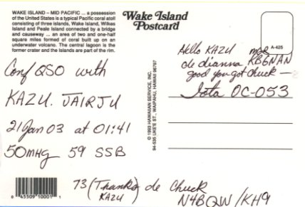

|
Flash ! DX
|
|
|
Flash ! DX
|
[Back Issues Jun.2003]
TIME:UTC(JST-09:00)
Report from JA1RJU (PM95sq)
30.Jun.2003(15:00e)
*BY-TV 00:00- 49.750 --
DU1EV/B 01:20- 50.008 CW Beacon
DU1ZV 01:26 50.110/115 CW (Es JR6)
DU1ZV 01:35 50.115 SSB OP & QSL JA1BRK
DS1CCU 01:46 50.115 CW
DU1EV/B 04:45- 50.008 CW Beacon
29.Jun.2003(15:00e)
*BY-TV 00:00- 49.750 --
JD1YAB 00:50 50.130 SSB (Es JA8 & 6)
DS1JQK 01:25 50.125 SSB
DS3VEL 02:24 50.207 SSB
BG9BA 02:45 50.115 CW
DS1JQK 02:53 50.130 CW
HL1KTX 03:11 50.110 SSB/CW
HL2JFM 03:40 50.120 SSB
HL1KTX 03:48 51.040 FM
DS1PEG 03:51 50.105 CW
HL1AEY 03:55 50.110 CW
DS1CCU 03:55 50.099 RTTY
BD2LH 06:41 50.115 SSB
BG9BA 06:48 50.115 CW
UA0SC 11:15 50.110 CW
28.Jun.2003(00:00a)
◎ 今日の"Flash ! DX"リポートは休止します。
27.Jun.2003(15:00e)
*BY-TV 00:00- 49.750 --
HL5XF 02:03 50.110 CW
UA0CQ 05:20 50.110 SSB QSY to 144.110MHz
UA0SC 11:00 50.110 CW
(5B4FL 11:05 50.108 CW JA1-)
(UK8OM 11:12 50.102 CW JA7)
JD1YAB 13:03 50.130 SSB
VR2XMT 13:28 50.110 SSB
| ◎ 夏場のEsのマルチホップは2日続けて同じコンデションにはならないと言われる6mの"定説"通り、 昨日に続く北米の入感はなかった。 コンデションは夜になって大陸方向に対して上昇、短いオープンながら1エリアから5B4FL(Cyprus)が、 7エリアから同時刻にUK8OM(Uzbekistan)とのQSOがリポートされている。 |
26.Jun.2003(15:00d)
*BY-TV 00:00- 49.750 --
(VE7AG 05:17 50.110 CW into QM05)
VE7AG 05:24 50.110 CW weak in PM95
VE7AG 05:31 50.106 CW sig coming up!
(KL7XL 05:40 50.110 SSB JA2)
(K7SS 05:45 50.107 CW JA1-)
(W7ND 06:05 50.103 CW JA2.3-)
VE7AG 06:10 50.106 CW
K7OFT 06:17 50.109 CW weak in PM95
(N7EPD 06:27 50.112 CW JA1.2.6.0)
VE7AG 06:30 50.106 CW still open!
KG6DX 07:16 50.110/105 SSB
| ◎ 今シーズン初のマルチホップのEsによりカナダ、北米がオープンした。 今日のオープンのきっかけは05:00z頃にカナダのVE7AG(CN89)からClusterに入力された49.750MHzのTV信号の入感リポートだった。 このリポートの直後の05:18z頃から50.110MHzのVE7AGのCQがJA1(QM05)で確認され初QSOが始まった。 オープン当初のVE7AGは、同じ1エリアでも西方向の"PM95"付近ではノイズに埋もれた微弱な信号だったが、 50.106MHzにQSYする05:30z頃から信号も上昇。 この頃からJAとのオープンに気づいた北米(CN85-CN88)からもQRVがClusterを通じてアナウンスされ、 JAとのQSOが始まった。北米はJA2、3に比べJA1ではオープンしているエリアは狭く、 北米方面のロケーションに恵まれない"PM95SQ"では信号も上昇して来なかった。 1エリアではVE7AGを最後に06:45zにはフェードアウトした。 |
25.Jun.2003(15:00e)
*BY-TV 00:00- 49.750 --
XW1IC 02:15 50.115 CW
DU1EV/B 02:15 50.008 CW Beacon
XW1IC 03:05 50.115 SSB/CW
JD1YAB/JD1 09:13 50.130 SSB Hahajima (OP.JD1BIA)
JD1YAB/b 09:15- 50.069 CW Beacon strong!
VK4RTL 09:20- 50.088 CW Beacon
VK6RSX 09:35- 50.304 CW Beacon
VK4CXQ 09:38 50.110 CW
VK6JQ 10:00 50.113 CW
VR2XMT 13:10 50.110 SSB
24.Jun.2003(15:00d)
*BY-TV 00:00- 49.750 --
JD1YAB/b 01:00- 50.069 CW Beacon (Es JA8)
JD1YAB 02:10- 50.113 CW
HL2KV 06:10 50.110 CW
(N4BQW/KH9 06:10- 50.110 CW/SSB JA2-6.8)
BD9BL/7 07:05 50.110 SSB
XV3AA 07:20 50.130 SSB
N4BQW/KH9 07:40- 50.110 CW/SSB weak
HL5XF 08:40 50.110 SSB
DU1EV/B 08:55 50.008 CW Beacon (Es JA6)
DU1ZV 09:05 50.115 SSB QSL & OP JA1BRK(also DX1F)
BG7JBA 09:44 50.110 CW
DS3HWS 09:59 50.150 SSB
23.Jun.2003(15:00d)
*BY-TV 00:00- 49.750 -- (Es JA6)
HL3EHN 02:41 50.150 CW
KG6DX 07:05 50.110 CW (Es JA8)
KH0/JA3MVI 07:50 50.110 SSB
KG6DX 07:54 50.110 SSB
KH0/JJ1CDY 07:56 50.110 SSB
KH0/JK1WUR 08:12 50.110 SSB
KH0/JA1HOD 08:30 50.110 SSB
KH0/JA1HOD 08:36 50.110 CW
KH0/JA3MVI 08:54 50.110/113 CW
22.Jun.2003(15:00d)
*BY-TV 00:00- 49.750 --
BV2SR 01:34 50.110 CW
DS4DBF 01:36 50.110 CW
BX2AB 02:15- 50.001 CW Beacon
BV2NT 02:36 50.110 SSB
KH0/JA3MVI 07:00 50.110 CW
KH0/JA3MVI 07:38 50.110 CW
KH0/JA1HOD 08:50 50.110 CW
21.Jun.2003(15:00d)
*BY-TV 01:00- 49.750 --
*9M-TV 01:00- 48.240/260 --
DS5JQK 07:40 50.150 CW/SSB (Es JA4-6 & JA8)
19-20.Jun.2003
◎ 6月19-20日の"Flash ! DX"リポートは休止します。
18.Jun.2003(15:00c)
*BY-TV 01:00- 49.750 --
17.Jun.2003(15:00d)
*BY-TV 01:00- 49.750 --
*9M-TV 01:00- 48.240/260 --
*VK-TV 08:30- 46.172 --
VK4FNQ 08:44 50.110/130 SSB
VK4RTL 08:45- 50.088 CW Beacon
VK6RSX 08:45- 50.304 CW Beacon
VI6TI 08:50 50.110 SSB IOTA-OC140(QSL via VK6NE)
VK6JJJ 08:55 50.110 SSB
VR2XMT 14:38 50.110 SSB
| ◎ 久しぶりにVK4/VK6が短時間ながらオープン。VK4FNQの入感に続いて、 West AustraliaのThevenard I.から運用しているVI6TI(OC-140)が突然強力に入感してきた。 |
16.Jun.2003(15:00d)
*BY-TV 01:00- 49.750 --
*9M-TV 01:00- 48.240/260 --
BV2NT 01:46 50.110 SSB
BV2NT 09:45 50.110 SSB
14-15.Jun.2003
◎ 第32回東北6SGミーティングが6月14-15日の両日、青森県南津軽郡大鰐町で開催。
(Flash ! DXのリポートは休止します)
13.Jun.2003(15:00d)
*BY-TV 00:00- 49.750 --
*9M-TV 00:30- 48.240/260 --
DS1CCU 00:30 50.110 CW
DU1EV/B 01:00- 50.008 CW Beacon
VR2SIX/B 01:00- 50.075 CW Beacon
XV9DT 01:09 50.110 SSB/CW
BV4VJ 02:58 50.110 SSB
DU1EV 03:45 50.110 CW
DU1EV/B 06:30- 50.008 CW Beacon
XW1IC 07:01 50.110 SSB/CW
XW1IC 08:22 50.115 SSB/CW
XV9DT 08:42 50.110 SSB
12.Jun.2003(15:00e)
*BY-TV 00:30- 49.750 --
*9M-TV 01:30- 48.240/260 --
XV9DT 06:15 50.110 CW CQing
JR8XXQ/JD1 08:00- 50.162 CW Minami Torishima
JR8XXQ/JD1 08:17- 50.162 SSB (Es JA8 & JR6)
BV2NT 08:56 50.110/115 SSB
JR8XXQ/JD1 09:27- 50.162 CW
BV2NT 11:54 50.110/115 SSB
(5B4FL 12:00 50.101 CW JA5)
BV4VJ 12:41 50.120 SSB
VR2XMT 12:53 50.110 SSB (Es JA5.JA6/JR6)
VR2XMT 14:38 50.110 SSB
| ◎ 午後からEsによる国内(JA8 & JA5-JR6)やJD1(南鳥島 & 父島)が強力にオープン。 特に九州方面の信号はBV(台湾)、VR2(香港)などと共に深夜まで強力に入感している。 |
11.Jun.2003(15:00d)
*BY-TV 01:00- 49.750 --
*9M-TV 01:00- 48.24/25/26--
VR2SIX/B 01:10- 50.075 CW Beacon
DS1CCU 01:17 50.110 CW
JD1YAB 01:26 50.114 CW
BV2NT 06:16 50.110 SSB
VR2SIX/B 07:05- 50.075 CW Beacon
10.Jun.2003(15:00c)
*BY-TV 00:00- 49.750 --
*9M-TV 00:30- 48.240/260 --
DU1EV/B 01:30- 50.008 CW Beacon
XW1IC 09:40 50.110 CW
09.Jun.2003(15:00c)
*BY-TV 01:00- 49.750 --
XW1IC 04:18 50.110 CW strong!
BG9BA 04:52 50.110 SSB
08.Jun.2003(15:00d)
*BY-TV 01:00- 49.750 --
VR2XMT 01:50 50.195 SSB
JD1BKZ 01:50 50.180 SSB
VR2XMT 06:10 50.160 SSB
XW1IC 08:27 50.110 CW QSL via E21EIC
XV9DT 08:32 50.110 CW
XW1IC 08:49 50.110 SSB UP5
XW1IC 10:30 50.112 CW UP1-2
VR2XMT 12:30 50.110 SSB
07.Jun.2003(15:00d)
*BY-TV 00:30- 49.750 --
*9M-TV 00:30- 48.24/25/26--
DU1EV/B 01:50- 50.008 CW Beacon
VR2SIX/B 01:50- 50.075 CW Beacon
VR2XMT 02:20 50.195 SSB
XV9DT 02:29 50.110 CW/SSB
BV3FQ 02:37 50.110/130 SSB
XV9DT 03:09 50.110 CW/SSB
BV2NT 03:25 50.110/115 SSB
06.Jun.2003(15:00d)
*BY-TV 00:00- 49.750 --
DU1EV/B 01:30- 50.008 CW Beacon
HL5XF 03:56 50.110 CW/SSB
KG6DX 07:25 50.110/106 CW
05.Jun.2003(15:00e)
*BY-TV 00:00- 49.750 --
*9M-TV 01:30- 48.240/260 --
DU1EV/B 01:50- 50.008 CW Beacon
*ZL-TV 06:30- 45.24/25/26--
6K0JK 09:40 50.157 SSB
DS1PEG 10:10 50.120 SSB
BG9BA 10:14 50.110 CW
JT1CO 10:20 50.112 CW
DS1CCU 10:29 50.112 CW
JT1CO 10:42 50.112 SSB
6K0JK 10:58 50.163 SSB
DS3HWS 12:57 50.150 SSB
DS1PEG 13:07 50.120 CW
04.Jun.2003(15:00d)
*BY-TV 00:00- 49.750 --
*9M-TV 01:00- 48.240/260 --
VR2XMT 01:39 50.110/115 SSB
VR2ZST 01:43 50.110 SSB
BV2NT 01:44 50.110/120 SSB
VR2XMT 01:50 50.180 SSB
VR2XMT 03:55 50.110/180 SSB
HL5XF 04:20 50.110/130 SSB/CW
VR2XMT 08:30 50.110 SSB
HL1LTC 09:23 50.110/140 SSB
HL1FO 09:34 50.230 SSB
DS1PCF 09:35 50.105 CW
HL3IB 09:36 50.193/188 SSB
03.Jun.2003(15:00c)
*BY-TV 00:00- 49.750 --
*9M-TV 01:00- 48.240/260 --
VR2XMT 02:15 50.110 SSB
BG9BA 02:20 50.115 SSB (Es JA5-6)
BG9BA 02:35 50.110 CW
VR2XMT 02:59 50.160 SSB
02.Jun.2003(15:00d)
*BY-TV 00:00- 49.750 --
*9M-TV 01:00- 48.240/260 --
XV9DT 01:42 50.110 CW CQing
XV9DT 02:01 50.110 SSB
XV9DT 02:24 50.110 CW
DU1EV/B 04:00- 50.008 CW Beacon QRH!
01.Jun.2003(15:00d)
*BY-TV 02:00- 49.750 --
BD2OG 05:35 50.110 SSB CQing
DS1HUM 05:42 50.110 SSB
DS1CCU 05:47 50.110 CW
DS1RRQ 05:54 51.000 FM
HL2NF 06:12 50.120 SSB
DS1CCU 07:10 50.111 CW
DS1PCF 07:12 50.105 SSB
HL3AVK 07:25 50.150 SSB
*VK-TV 07:50- 46.172/240 --
VK6RSX 09:45- 50.304 CW Beacon
N7ET/DU7 09:54 50.140 SSB

 1月のQRVに続き6月から再び6週間の予定でWake Is.からQRVするN4BQW/KH9 QSL・MGRは今回もKB6NANが担当する(TNX KH7U & JF2MBF)。 |